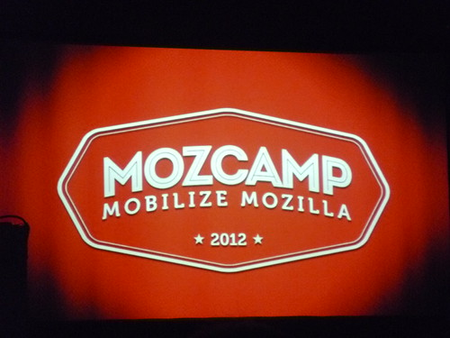

25 novembre 2012
MozCamp 2012
/* Article un peu en retard, bilan de mon 2ème MozCamp ! */

Début Septembre j'ai participé à mon 2ème MozCamp qui se tenait cette année à Varsovie en Pologne ! L'événement commençait vendredi 7 au restaurant "Champions" au bas de l’hôtel Marriott. Pour cette édition, nous avions tous un "Buddy" comprenez un parrain sélectionné au hasard parmi plus de 250 personnes (employés comme bénévoles). Mais plus encore nous devions tous définir nos missions pour ce MozCamp. J'ai donc rencontré ce vendredi mon "buddy" : Andrei Hajdukewycz alias Sancus, développeur web pour Thunderbird ! Nous avons discuté un moment sur le client de messagerie et de son avenir après l'annonce de Mozilla de ne plus focaliser ses ressources dans son développement. Mes objectifs principaux cette année étaient d'apprendre plus sur Firefox OS, le nouveau système pour téléphone dont j'ai déjà parlé sur mon blog connu à l'époque sous le nom de "Boot2Gecko", comprendre les nouveaux enjeux de Mozilla, rencontrer de nouvelle personnes avec qui travailler, trouver de nouveaux projets sur lesquels travailler autre que de la traduction. Le programme de cette année était séparé en plusieurs thèmes : "Desktop" (Firefox pour PC) / "Mobile" (Firefox pour Android), Apps and B2G (Applications Web et Firefox OS) ainsi que "Grow Mozilla" (Communauté, Promotion, Localisation, Reps...). Je me suis principalement focalisé sur Firefox OS et j'ai donc assisté à ces conférences : Samedi :- B2G Localization Workshop (Atelier de traduction pour comprendre comment traduire Firefox OS)
- Firefox OS Launch (Conférence expliquant le lancement de Firefox OS au Brésil avec le téléphone)
- WebRTC Demystified: What is it & how can you help? (Conférence sur la technologie WebRTC permettant d'établir des communications audio/vidéo sur le web)
- Write Code For Firefox Desktop (Écrire du code pour Firefox PC)
- Testing B2G Desktop Builds (Atelier pour tester/rapporter des bugs sur les version bureau compilées de Firefox OS)
- Searching for success: What type of mobile apps should I build? (Conférence pour comprendre le marché actuel des applications mobile et quel type d'applications les gens consomment, gratuites VS payantes)
- B2G Game Development (Conférence sur comment développer des jeux pour Firefox OS en utilisant les technologies Web)
- WebAPI Status (État des lieux des WebAPI, technologies implémentées dans Firefox pour prendre en charge tout un tas de fonctionnalités des appareils comme les téléphones)
- Make Something Real for Firefox OS with Mozilla App Templates (Comment utiliser des squelettes pour réaliser une application web)
- How marketing Firefox OS is different (and how you can help!) (Réflexions sur comment promouvoir Firefox OS parmi les systèmes déjà existants, recherche sur l'utilisation/consommation des gens, quel sont les types de forfaits dans tel ou tel pays)
- How to User Test Your App (Atelier pour apprendre à réaliser des tests de son application)
- Exploring Touchevents (Conférence sur l'API JavaScript TouchEvents permettant de gérer le tactile sur les appareils comme les téléphones et tablettes)
Commentaires 3